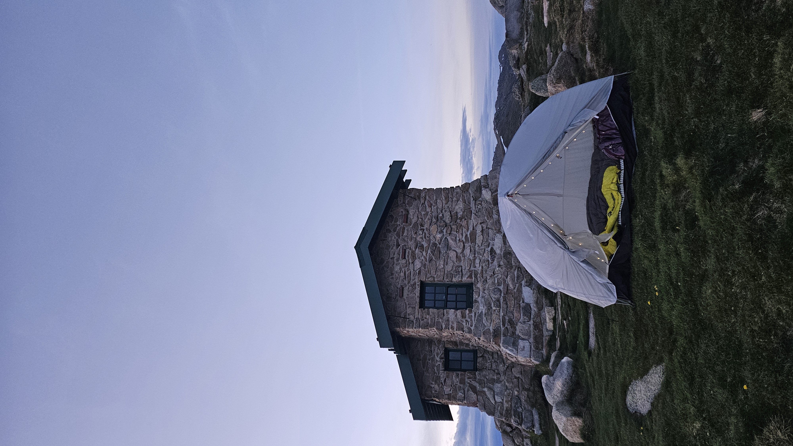
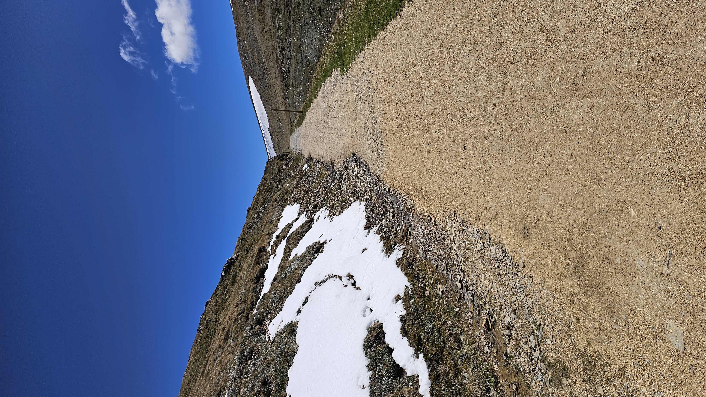
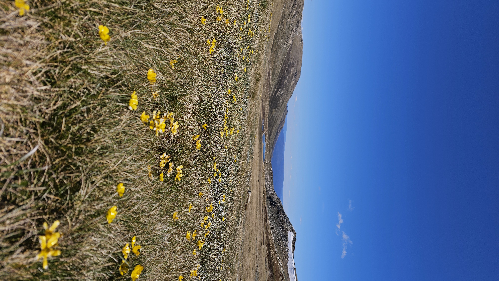

Hiking / Snowy Mountains
My first solo overnight hike up Mount Kosciuszko
For my first solo overnight hike, I figured I may as well pick the highest mountain in Australia. By sunset I’d stood on top of Mount Kosciuszko, touched snow for the first time and eaten two-minute noodles with a view I could’ve sat and watched for hours. I was pretty impressed with how the whole thing was going. I felt like I was on a real 'little' adventure. The mountain apparently had a slightly different definition of “little”.
The plan was to start at Charlotte Pass, hike past Seaman’s Hut to the summit of Mount Kosciuszko, then double back and camp near the hut. Then 2:30 am rolled around and I found myself outside in the wind, trying to stop my tent from blowing away. Thank goodness I’d met Amelia and Georgia who were there on their first overnight hike too!

From Jindabyne to Charlotte Pass
I’d camped at Discovery Parks in Jindabyne the night before. In the morning I headed into town to grab a bite to eat and pick up a map from the information centre. The staff informed me that a lot of tracks were closed during the animal cull and that off-trail hiking was not on the cards during my visit. A quick alter of plans and the Summit Walk from Charlotte Pass was my new plan.
Charlotte Pass sits inside Kosciuszko National Park, so park entry was one more thing to sort out before the hike. I could already see snowdrifts from the car as I drove up. For someone used to hiking in Queensland, that was exciting enough all on its own.
Mount Kosciuszko tops out at 2,228 metres. For a bit of Queensland perspective, Mount Barney reaches 1,359 metres and Mount Ngungun sits at 253 metres. Seeing those numbers together made me appreciate just how high I’d be walking that day.



First snow and the last stretch
I could see snowdrifts along the trail throughout the entire hike. Just past Seaman’s Hut, one was right on the edge of the path. I could finally reach down and touch snow for the first time. The summit could wait a few extra minutes.
I had met Amelia and Georgia who were from Sydney closer to the top. They were on their first overnight hike too, so my solo trip came with some unexpected company. After making it to the top of Mount Kosciuszko, I headed back towards the hut to set up camp.
Noodles, sunset and a very early wake-up
Dinner was noodles and I kept thinking to myself, could it get any better than this?? I got to enjoy the sunset from camp before turning in for the night.
At about 2:30 am, the wind picked up so much so that if felt like my tent would either collapse or fly away. I called out to the girls and they helped my into the hut with my tent and belongings. Definitely one night I will remember!
I’d touched snow, stood on Australia’s highest peak, survived an incredibly windy night and made a couple of friends on my first solo overnighter. I'm definitely hooked and cannot wait for more overnight hiking adventures.
